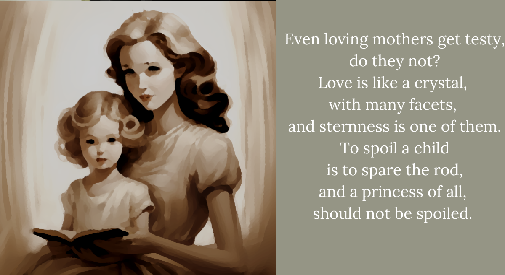

AA2. The Queen is her true mother
The princess remembered days of warmth,
when her mother had not been so strict.
But of course, the princess had not been so old.
Never, now, did the queen and her servants,
who were here eyes and ears,
never did they fail to say:
You should know better!
But the princess, sadly, did know better.
But knowing better does not
always mean doing better.
And somehow, no one ever mentioned that.
One day the princess found herself faint,
dizzy and sick,
yearning for her mother’s kindness.
She hated to bother mother,
for mother had better things to do,
than deal with a gloomy child.
But that day, she’d paced all over,
and her feet began to ache.
Then she read books,
until her eyes began to ache.
And then because she’d held it in so long,
and her eyes were hurting anyway,
she cried, because she realized her heart
had been aching for a very long time.